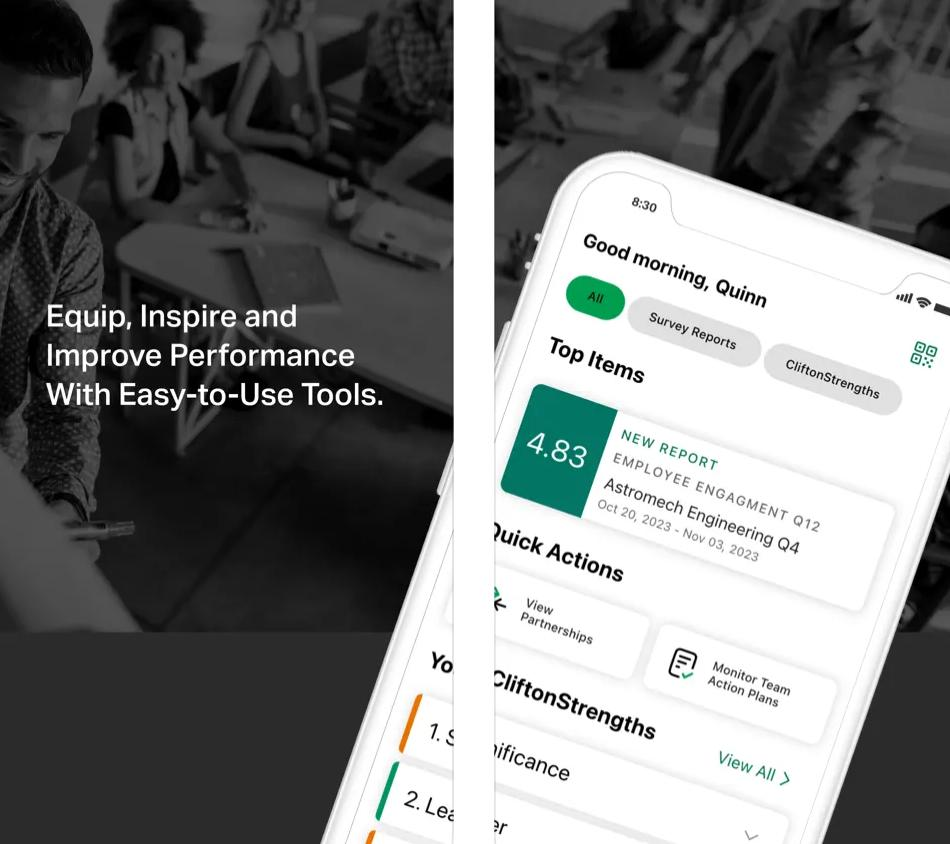

AI & Agentic Tools
Claude Code, Wibey (Walmart AI agent), Claude Design, OpenArt, multi-model workflows, reusable skills, prompt engineering
Product leadership • Mobile • AI • Web • MS Teams
I build mobile and AI powered products with simple UX, fast performance, and results that show up on a dashboard.
Built multi-model review workflows and reusable skills with Claude Code. Hands-on, not theoretical.
Shipped interactive apps with coding agents: voice cues, animated SVG, timers. From prompt to working product.
Codified agent fixes as reusable skills, turning one-off corrections into constraints that hold across every run.
Turned data into action, driving smarter AI and product strategies.
Decoded cohorts and funnels to refine engagement and retention.
Tracked the right KPIs, from model accuracy to user growth.
Listened to users, gathering insights for AI-driven features.
Kept the roadmap alive, aligning AI, mobile, and platform teams.
Prioritized features with RICE, balancing ROI and innovation.
Mentored and coached PMs, building strong AI and mobile product talent.
Powered decisions with analytics, leveraging Amplitude, Mixpanel, and Firebase.
Aligned leadership and engineers to deliver scalable AI solutions.
Most people pick a lane. I didn't.
Wearing both hats is not a liability.
It is the point.
When the person writing the product brief can also read the diff, fewer things fall through the cracks. Faster decisions. Tighter builds. Outcomes that show up on a dashboard.
Claude Code, Wibey (Walmart AI agent), Claude Design, OpenArt, multi-model workflows, reusable skills, prompt engineering
User stories, Roadmap, Backlog order, Stakeholder care, Market review, End-to-end Product delivery, GTM
AWS, Power BI, SQL, Machine Translation, Firebase, Amplitude
Agile practice, Jira and Confluence, Sprint planning, Team coordination
Research, Usability tests, Personas, Journey maps
Cost study, Value based price, Dynamic price, elasticity
Workshops, Clear decks, Crisp notes for leaders
Swift, SwiftUI, UIKit, Combine, Concurrency, Core Data, Instruments
English, Telugu, Hindi
Major projects
Mobile apps shipped
Cost saved (program)
Summit CSAT
Increase in engagement
 🔒 Private project
🔒 Private project
iOS app and safety engine for real-time road trip alerts. Built with Swift; engine handles routing logic, hazard detection, and trip-aware notifications.
Claude Code · iOS · Safety
 🔒 Private project
🔒 Private project
Interactive coaching app with voice cues, animated SVG exercise visuals, and interval timers. UI and interaction layer are live; data layer and persistence architecture are in progress.
Claude Code · SwiftUI · Voice · Brewing architecture

Translation memory and terms with automation. Hundreds of PDFs in many languages with strong quality checks and lower cost.
80% cost reduction · 60% faster turnaround

Conversational assistant that answers questions, recommends next actions, and surfaces insights in real time.
+45% self-service adoption · 4.7★ satisfaction

Brought strengths and engagement tools into daily chat and meetings which lifted adoption in enterprise accounts.
+37% engagement · strong enterprise pilot adoption

Swift and SwiftUI improvements for speed and stability. Better startup time and fewer crashes which increased weekly use.
Faster startup · fewer crashes · higher weekly retention

Built a steady process across triage, dashboards, and release notes so teams resolve issues faster and protect trust.

Simple rituals and mobile prompts that nudge teams to act which raised participation in key activities.

Panel management flow for insights and research with clear privacy and simple onboarding.
Classic card game app with smooth play and clean UI built at Mobiware.
Early exploration of extended reality on mobile with simple scenes and interaction for learning.

Local search and discovery app with maps, places, and deals built at Mobiware.
Role: Product Manager
Timeline: 12 monthsAs the Product Manager and Strategy Lead, I led the Machine Translations initiative to cut cost and improve speed at global scale. The CFO sponsored program delivered a unified portal and translation pipeline with a translation memory layer to maximize accuracy and reuse.
Portal for on-demand requests and a bulk pipeline with translation memory reuse
DISCOVER
Interviewed content owners, mapped flows, audited glossary use.
DECIDE
Chose AWS Translate with custom terms, defined QA gates and reuse rules.
DELIVER
Automated intake → translation → review → publish with dashboards.
Unified portal for request intake plus a phased pipeline for bulk translation. Translation memory captures prior sentences for reuse. Accuracy is improved by selecting the best engine per language across AWS and Google.
Choose the most accurate engine per language for better output
Requirements sorted into must-have, should-have, could-have, and won't-have with reasoning
Iterative releases with feedback to drive adoption
Reuse existing sentences for consistency and savings
Addressed platform limits and accuracy risks with preprocessing, data design, and guardrails.
Workarounds include splitting and merging term files, validating cells, and staging uploads to avoid loss.
Matched engines by language and verified outputs with sampling and review. Translation memory reinforced phrasing over time.
Consolidated requirements and prioritized must-have items. Created a clear intake and SLA model across departments.
Cost reduction
Faster turnaround
Translation memory reuse
Role: Product Manager
Timeline: 3 monthsLed the end-to-end redesign of the Gallup Access mobile app for the annual Summit: modernized dashboard, launched the first GallupGPT chatbot, added secure QR scanning for instant connections, and introduced Proximity Chart & Team Strength Grid for collaborative insights.
AI-powered, event-ready experience with interactive dashboards and collaboration tools
DISCOVER
User interviews, focus groups, and analytics to identify navigation pain points and collaboration needs.
DECIDE
Co-created wireframes and flows; prioritized features with RICE; phased Summit rollout.
DELIVER
A/B tests, in-app surveys, live feedback loop during Summit; tight QA & performance checks.
📊 Redesigned Dashboard
🤖 GallupGPT Chatbot
🔍 QR Code Scan
📈 Proximity Chart & Strength Grid
📊 Redesigned Dashboard
🤖 GallupGPT Chatbot
🔍 QR Code Scan
📈 Proximity Chart & Strength Grid
Increase in dashboard engagement
Summit user satisfaction
Adoption of QR & visual tools
Role: Product Manager
Timeline: 4 monthsAs the Product Manager, I led the integration of machine translated content into the mobile app while maintaining a seamless user experience. This required UX design to support a module specific language switch alongside the global app level switch.
Translated module content on mobile with a clear temporary language switch
DISCOVER
Mapped current UX flows and ran brainstorming sessions
DECIDE
Proposed a module specific switch with a clear note on scope
DELIVER
Tested with focus groups, iterated, and shipped with positive feedback
A dedicated temporary language switch lives inside the target module. A note clarifies scope and that leaving the module resets the app to the global language, preserving the overall experience.
Global switch remains authoritative beyond the module
Feedback loops ensured clarity and confidence
No surprises when navigating in or out of the module
Focus groups favored the clear scoped control
Role: Product Thinker
Personal ProjectStandalone Parcel is a label API today. It should be an intelligence layer. This case study proposes turning Stord's Parcel Rating API into a confidence-graded, outcome-informed shipping recommendation surface, one no pure-play carrier API can replicate, built on Stord's $15B+ of real commerce GMV flowing through a vertically integrated stack.
Rate API → Intelligent shipping surface grounded in real fulfillment outcome data
Brands aren't losing on price. They're losing on predictability.
of brands provide confident estimated delivery dates at checkout
cart abandonment rate, delivery clarity the top cited reason
of support tickets are WISMO queries, exceeding 50% during peak
of supply chain leaders name AI their primary 2026 driver
Source: Stord 2026 State of AI in E-Commerce Report
Extend StordAI's data moat into the Parcel Rating API, making every rate quote not just a price lookup, but a confidence-graded, outcome-informed shipping recommendation no pure-play carrier API can replicate.
Each layer ships incrementally. Every new signal is an additive response field, brands can ignore it and still get a standard rate quote.
LAYER 1 · NOW, Confidence-scored rate responses
Q3 2026Augment every rate quote with a delivery_confidence score (0–1) derived from historical on-time performance for that carrier, service level, destination zone, and day-of-week. No new model required, lookup against existing shipment outcomes data.
LAYER 2 · NEAR-TERM, Network condition signals
Q4 2026Surface real-time carrier capacity signals and deviation risk as advisory fields. Is UPS Ground in Zone 6 running 12% late this week? Brands get actionable routing intelligence at decision time, not in a post-ship report.
LAYER 3 · STRATEGIC, Recommended rate selection
Q1 2027A recommended_carrier field that balances cost, confidence, and brand-configured SLA parameters. The EDD model from StordAI surfaced through the API contract, brands connecting their storefront to this move from the 1% to the majority on reliable delivery promises.
Illustrative API response, POST /v1/parcel/rates
{
"rates": [{
"carrier": "UPS",
"service": "Ground",
"rate_cents": 842,
"estimated_days": 3,
"delivery_confidence": 0.91, // Layer 1
"network_signal": {
"status": "nominal",
"deviation_risk": "low" // Layer 2
},
"recommended": true, // Layer 3
"recommendation_reason": "Best cost-confidence balance for 3-day SLA"
}]
}
Every layer has a real execution risk. Naming them is not a hedge, it's how you sequence the work correctly and avoid building the wrong thing at the wrong time.
LAYER 1 · Latency vs. intelligence
Q3 2026Risk
Adding a confidence score lookup to every rate response introduces compute on a path that high-volume brands expect to be fast. A brand generating 50,000 rate requests per day cannot absorb a 200ms penalty per call.
Mitigation
Confidence scores are pre-computed nightly at the carrier-service-zone-day-of-week grain and served from a low-latency lookup table. The API reads a score, it does not generate one. Added overhead stays under 5ms at p99. The trade-off is freshness: scores reflect yesterday's outcomes, not today's. Acceptable for a signal that is pattern-based and changes slowly.
LAYER 2 · Signal quality vs. coverage
Q4 2026Risk
Network condition signals are only as good as the telemetry feeding them. Stord has strong visibility into its own fulfillment network, but carrier performance data outside it (especially for bring-your-own-carrier scenarios) may be sparse or delayed. Publishing a deviation_risk field that is wrong erodes trust faster than not publishing it at all.
Mitigation
Launch Layer 2 as an opt-in beta field with explicit coverage metadata in the response. Each network_signal object includes a data_coverage field (high / medium / low / unavailable) so brands know how much to weight it. Low-coverage signals are surfaced, not suppressed, but clearly flagged. Coverage expands as telemetry improves across the carrier portfolio.
LAYER 3 · Recommendation quality vs. brand autonomy
Q1 2027Risk
A recommended_carrier field that gets it wrong does not just cause a bad shipment. It damages Stord's credibility as an intelligence layer and gives brands a reason to ignore all future signals. Shipping a weak recommendation is worse than shipping no recommendation.
Mitigation
Layer 3 does not launch until Layer 1 confidence scores have been in production for at least one full peak season with a validated score-to-outcome correlation track record. The recommended field is advisory, not prescriptive. Brands configure their own SLA parameters (cost weight, confidence threshold, delivery promise target) so the recommendation reflects their priorities, preserving brand autonomy while giving Stord the feedback loop to improve over time.
CROSS-CUTTING · Standalone Parcel vs. fulfillment customer parity
Risk
Building intelligence features for Standalone Parcel customers before fulfillment customers have the same signals creates internal tension. Fulfillment customers already in the Stord ecosystem may reasonably ask why a parcel-only API customer gets better routing intelligence than they do through the OMS.
Mitigation
The intelligence layer is built once and shared. Confidence scores and network signals feed both the Standalone Parcel API and the OMS routing logic from the same underlying data service. Standalone Parcel is the external surface that makes the capability visible and commercially differentiated. Fulfillment customers benefit from the same signals through the existing product surface. This is not two separate features, one data service with two API surfaces.
| Outcome | Mechanism | Horizon |
|---|---|---|
| API differentiation over EasyPost / Shipium | Confidence scores become a sales point rate-only APIs can't match | Q3 2026 |
| Reduction in WISMO support tickets | Better upfront routing decisions cut late deliveries & downstream queries (currently 25–35% of all tickets) | Q4 2026 |
| Checkout conversion lift | Brands surface StordAI-backed delivery dates at checkout, closing the 58% consumer demand gap for confident ETAs | Q1 2027 |
| StordAI external API expansion | First StordAI capability surfaced through an external API, establishing architecture pattern for future agentic commerce | Strategic |
The metric that matters most
Not API calls. Not labels generated. The metric to instrument from day one: what % of brands are making routing decisions using intelligence fields rather than price alone? That's the indicator we've built a moat, not just a pipe.
DAYS 1–14 · Data audit
Partner with engineering and data teams to audit whether historical shipment outcome data is currently instrumented at the granularity needed for zone-level confidence scoring. This is the biggest risk to the proposal, validate it before writing a single spec.
DAYS 1–30 · Customer discovery
Three discovery calls with brands already interested in Standalone Parcel, probing how they make carrier selection decisions today, what signals they wish they had, and whether a confidence-graded rate response would change their routing logic or storefront promises.
DAY 60 · PRD for Layer 1
PRD for delivery_confidence score with agreed data schema, defined success metric (% of brands using the confidence field in routing logic within 60 days of GA), and a commercial partner to fold it into the Standalone Parcel sales narrative before the next pipeline cycle.
Role: Product Manager
Timeline: 8 monthsI led the effort to bring Gallup Access into Microsoft Teams so people could use key features inside daily chat and meetings. We focused the pilot on the highest value capabilities, then built a scalable path for future rollouts.
Streamlined access to features inside Microsoft Teams
DISCOVER
Surveys and focus groups to identify priorities
DECIDE
Prioritized high value features for a pilot launch
DELIVER
Finalized UX flows, integrated platform APIs, and set up feedback loops
A Teams app with a streamlined dashboard and quick access to high value features. A scalable backend pipeline supports content updates and future integrations.
Key tasks and content in one place
Graph and platform APIs for feature access
Built for quick future rollouts
Continuous input from pilot users
Scrum Alliance
Scrum Alliance
Pendo
Usually replies instantly